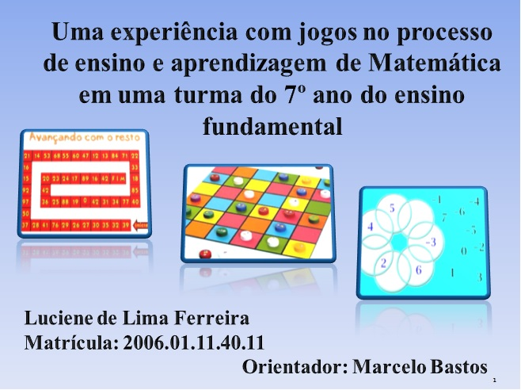

< Meu Portfólio >
#Luciene Lima
< autora >
Olá! Meu nome é Luciene Lima.
Eu sou Desenvolvedora Web Front-end!
HTML | CSS | Javascript | Python
Sou formada em Licenciatura em Matemática, pela UNESA RJ. Minha monografia foi sobre “Uma experiência com jogos no processo de ensino e aprendizagem de Matemática em uma turma do 7º ano do ensino fundamental”.

Sou Pós-Graduada em Novas Tecnologias no Ensino de Matemática , pela UFF RJ.
Tenho experiência como Auxiliar Administrativa - Financeira, vendas online e monitoria online para concursos públicos.
Gosto muito de teatro e de fazer amigurumis.
Minha paixão pela tecnologia vem desde a época que fiz curso de informática, e além disso, sempre gostei de aprender coisas novas.
Através do Projeto Elas na Tech (2023), vi uma oportunidade de aprender programação e me inscrevi no projeto para o curso de Desenvolvimento Web Front-end, da JA Brasil em parceria com a IBM, Udemy e CCR.
Também estou participando do Projeto Descodificadas (da Descod Tech).
→ Busco oportunidades na área de Desenvolvedor Web Front-end:
HTML, CSS, Javascript, Python.
< Meus Contatos: >
Meu currículoConheça meus projetos